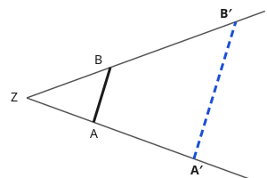
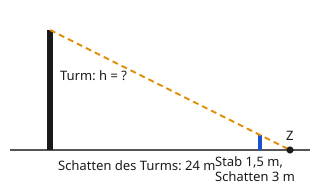
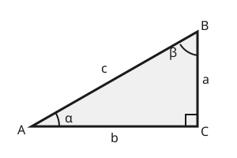
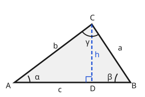
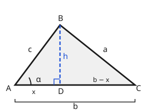

Medienübersicht
Alle Bilder, Audios und Videos dieser App mit ihrer Quelle und ihrer Lizenz.
Bilder

images/flaeche-faktor.svg© CC0-1.0Verwendet auf: Ähnliche Figuren

images/strahlensatz-v.svg© CC0-1.0Verwendet auf: Strahlensätze

images/turm-schatten.svg© CC0-1.0Verwendet auf: Turmhöhe und Flussbreite

images/fluss-x.svg© CC0-1.0Verwendet auf: Turmhöhe und Flussbreite

images/dreieck-seiten.svg© CC0-1.0Verwendet auf: Seitenverhältnisse im rechtwinkligen Dreieck

images/dreieck-hoehe-c.svg© CC0-1.0Verwendet auf: Der Sinussatz

images/dreieck-hoehe-b.svg© CC0-1.0Verwendet auf: Der Kosinussatz